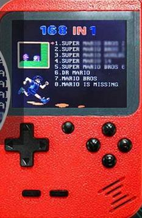
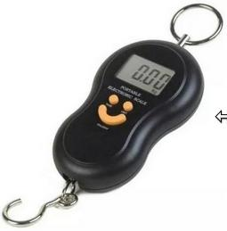

One of the things I’ve been wanting to do is to make an autonomous personal computing device, since one doesn’t seem to be forthcoming from the economy. It seems likely the easiest way to do this is to get an existing device with the right peripherals (power, input, and output), remove its CPU and RAM, and implant a new microcontroller.
None of the photos below are mine, so I cannot release them to the public domain; they are included for the purpose of factual commentary, including links to their sources.
Scientific calculators seem particularly promising here, but I should probably start with something easier, like a large four-banger. See the note on screens for some details.
The most interesting possibility here is probably a cellphone, maybe a flip phone for lower battery usage — these tend to have low-power sunlight-readable screens, rechargeable batteries, USB connections, usable keyboards, speakers, and microphones, as well as some radio stuff. Old Nokia displays in particular are SPI and so relatively easy to connect up to (easier than directly driving an LCD), though you suffer some display latency as a result, and they only use a couple of microwatts. A broken Nokia 1110 goes for AR$500 (US$4) on MercadoLibre; a lot containing a 3200, a 9300, and a 2651 go for AR$1600 (US$10); a lot containing eight broken cellphones from that epoch, including two QWERTY phones, goes for AR$2000 (US$14); a broken QWERTY Nokia Asha 303 goes for AR$900 (US$7). (The key words on Mercado Libre are nokia reparar.) But this is probably a much more advanced project.
I also have a solar garden light that seems like an appealing possibility, though perhaps to dissect for parts; see Garden Light Panel for details. I was disappointed to learn that the panel is only 40–80 mW rather than the 300 mW I was hoping for, probably because it’s amorphous, but that’s still enough to be useful.
There’s a “Lionel’s Smart Tablet infantil” on MercadoLibre right now for sale by “chiquiplanet” for AR$3000 (US$20); it has what appears to be a large passive-matrix LCD screen that seems to be monochrome and about 80×16 non-square pixels, and has a gaudy 46-key ABCDEF membrane keyboard:
It runs on AA batteries and appears to have a reasonably robust construction, although it’s not marketed for kids under 3, which makes me wonder if it’s aimed at kids with intellectual disabilities. It’s 250 mm × 190 mm, and looks to be about 15 mm thick, which seems like it would be a lot of space for adding a solar panel.
For AR$3500 (US$23) there’s a toy “bilingual Disney Cars computer” sold by El Mundo del Juguete, which looks like it maybe has a higher resolution display and also runs on AA batteries; it has a QWERTY keyboard and a mouse:

And the old standard “9999 in 1 brick game” from 2006 or earlier is still selling, at AR$790 (US$5), which I think is the same price I paid in 2006:

This thing has pixels on the LCD screen that are literally the Tetris squares; I think that means it’s 10×20 pixels. The standard chip-on-board hardware provides you with a number of different games (with a “difficulty” parameter to multiply out to the 9999 number) within that context.
Kinderland sells, for US$10, a keychain-sized clone of the Pac-Man arcade machine that runs on two AAA batteries:

This doesn’t have much of a keyboard, but it does have lots of space to add one, and it has what appears to be a thumb-sized backlit LCD (20 mm square) with a resolution on the order of an NTSC TV. The advertisement explains several times that it’s a completely functional replica. Several buyers marvel at how well it works. Tim Schuerewegen says he reprogrammed a similar but somewhat larger game console just by reprogramming its SPI Flash ROM.
I don’t know what kind of electronic interface the Pac-Man LCD takes but I imagine it’s pretty power-hungry.
A more modern version of the "brick game" is the “GC-26 168-in-1 portable console”, which is a sort of Gameboy form factor (78mm × 117mm × 24mm) with a 2.8-inch backlit color LCD and a volume knob, for US$12.50:

The resolution looks pretty decent, like at least 640×480; probably it’s precisely NTSC or PAL resolution:

This has composite video output, charges over USB, includes an 800mAh lithium battery, an 8-bit CPU, 8 megabytes containing 168 ROMs, and probably no programmability. Hackaday did a teardown of one under the brand “Weikin” last year; they found it had a 128 mebibit NOR Flash chip you could probably reprogram. Some dude on YouChube reviewed the games and found some problems in the composite video output; he also took it apart and fixed a video problem.
There are a variety of branded variants of this device, including the Level-UP RetroBoy (“5 hour”, “600 mAh” battery), the NogaNet Pocky, and the Sup. A smaller-scale version is sold for US$8 as the 351-gram Seisa SY-891 or SY-888A Game Player Digital Pocket System, with 328 games on a 2.2-inch screen:
Various kinds of telephony devices have displays, keyboards, buttons, and sometimes radios.
For US$9.50 there’s a caller-ID display for sale:
This evidently has about 20 digits of 7-segment reflective LCD plus some specific indicators, and a compartment for two AAA batteries.
For US$19 there’s a cordless phone with a backlit LCD (which the vendor fraudulently claims is an LED display), an Alcatel Versatis E100:

This gets you a phone keypad with some menu buttons, a handset for voice communication, a rechargeable battery (supposedly 400-mAh and 7-hour talk time) and recharging base, what looks like a 12-character 14-segment alphanumeric display, and of course the short-range license-free radio, probably 900MHz with a 6kHz bandwidth.
Someone is selling a Motorola one-way pager for US$8 with what looks like a 20×4 character dot-matrix character display:

I’m not sure if text pager service still exists (and neither is the seller), but presumably this device comes with keyboard and screen intact, and Motorola pagers were famously durable. It probably doesn’t have a rechargeable battery, but rather a AAA battery carrier.
There are various walkie-talkies on sale (called “handy” apparently), like this Baofeng BF-T12 for US$10 from DigitalStore:

This is a push-to-talk walkie-talkie transmitting on 16 25-kHz channels of the 400–470 MHz band, with a 1500-mAh USB-rechargeable battery that claims 8-hour battery life, a two-digit 7-segment LCD, earphone and microphone jacks and a volume knob, claiming a 6–10 km range in the country, or 1–5 km in the city.
In the US, using most of this band requires operator licensing or is even reserved for emergency services, although two of the channels are FRS channels (up to 500 mW, while this radio is supposedly 2 W), but 95% of users ignore this, even though they’re potentially subject to 5-figure fines. Also the US FCC restricts these radios to transmitting on 12.5-MHz channels since 2013 (“narrowbanding”). Here in Argentina at least some of this band is exclusively assigned to individual licensees but I’m not sure what the legal status of the rest of the band is.
Someone’s selling what seems to be a 2GB S1 MP3 USB stick for US$8:

This is about the same price it went for in 2007, the last time I bought one. It has a reflective dot-matrix passive-matrix LCD screen with on the order of 128×32 monochrome pixels, 2 GB of storage, an iPod-style conductive volume control, four buttons, and a USB A female connector to plug it in with. If I’m right that it’s an S1 MP3, there are a couple of open-source firmwares for them (SourceForge, the former s1mp3.de, Wladston’s former s1mp3.org) that added features, so you might be able to program it instead of rebraining it. But they’ve been abandoned since 2009, and the CPU is just a 24-MHz Z80.
Someone else is selling their SanDisk Sansa 4GB MP3 player for the more reasonable price of US$3.30; it has a MicroSD slot and a backlit LCD that looks to be something like 320×240... and a dead battery:

There are also “MP4 players” that have, typically, larger backlit color screens for viewing videos, which have apparently not been totally replaced by cellphones; some cost US$30 or more and have Bluetooth, FM radio transmission, and so on.
You can get a used “digital picture frame” for US$23, basically a backlit 7-inch color LCD with what looks like resolution of about 640×480:
Presumably this sucks battery like nobody’s business and is hard to rebrain.
MercadoLibre has an entire category of "balanzas para valija", suitcase scales, like this US$3.30 specimen:

This includes a large, easy-to-read 3-digit 7-segment LCD, three buttons, and presumably some kind of strain gauge and battery.
There are similar displays on digital meat thermometers (US$2.50), digital calipers (US$10), and digital countertop scales (US$10).

There are also indoor/outdoor digital weather thermometers with LCD displays like this 3-digit 30mm-tall TPM-10 for AR$600 (US$4) which tend to have fairly large displays:
Some of them are larger and have more digits. And the temperature sensor itself is potentially useful; simply rebraining such a thermometer without drilling any further holes could give you a logging Wi-Fi thermometer.
One digital alarm clock sells for US$3.40 and also has an LCD display with quite a number of 7-segment and 14-segment characters.
And for larger digits there’s a 45-mm-tall LCD alarm clock Planeta Zenok sells for US$6.50, with somewhat fewer digits:
For US$2 you can get a MegaCuper LCD calculator watch, though most competitors are much more expensive:
There are lots of remote controls that include a shitty keyboard, an infrared LED for communication, and a reflective LCD display, mostly those for air conditioners; for example, those of the LG split air conditioner Akb73756210 (US$5), the LG BGH Arcool Ar809 air conditioner (US$5), the Samsung AR807 air conditioner (US$4.50), and the Sanyo Y512f2 air conditioner (US$4.50). The LCD displays typically have a few 7-segment or 14-segment digits or character positions and a bunch of special-purpose indicators: fan, snowflake, and so on.